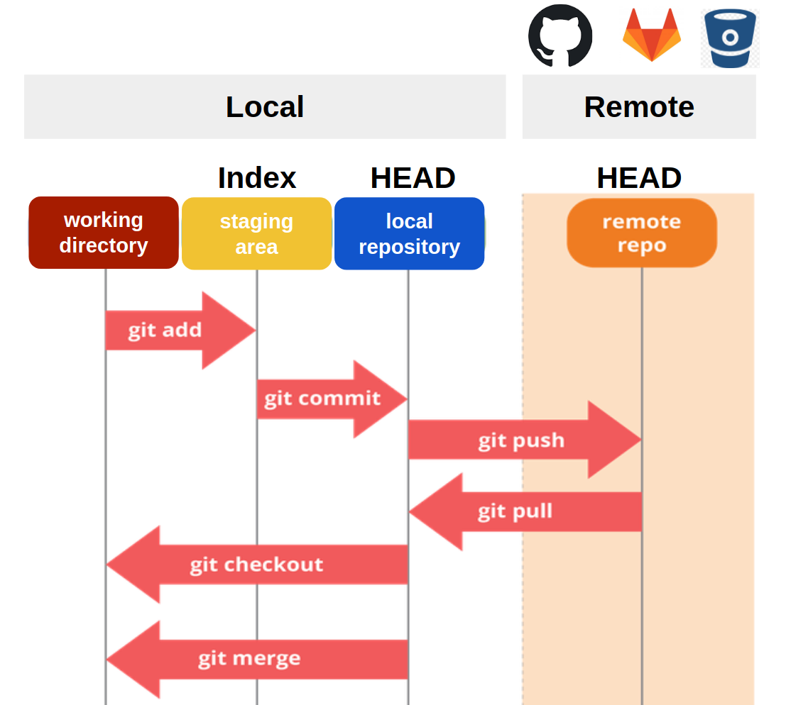
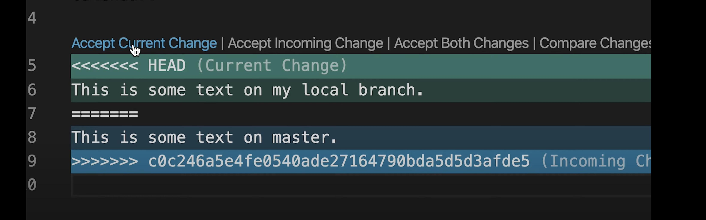

From Solo Coding to Team Projects - Here's How GitHub Makes It Easy
When you work on a project, you'll often make many small updates — fixing bugs, adding new features, or improving the design. Git helps you manage these changes safely and efficiently. Instead of losing track of what you did or overwriting someone else's work, you can save each change as a clear step in your project's history.
On this page, you'll learn how to add, commit, and push your changes, how to collaborate through pull requests, and how to handle conflicts when different versions of code collide. In short, this is everything you need to know to keep your project's progress organized and stress-free.
Save Early, Save Often!
Saving changes often with Git means creating small, meaningful commits.
This makes it easier to:
- Track progress step by step.
- Revert to an earlier version if something breaks.
- Collaborate with others without losing work.
Think of commits as "checkpoints" in a video game.
How to Create a Project on GitHub
When you make changes to your files, Git won't save them automatically. You need to follow three main steps:

Command and todo :
- Stage changes:
Prepare files to be included in the next commit.
git add filenameOR add all changes:
git add . - Commit changes :
Save the staged changes with a message describing what you did.
git commit -m “something message” - Push changes (send to GitHub) :
Send your commits to the remote repository on GitHub!
git pushOR If you are publishing a new branch, then you will need to also configure an upstream remote and branch name:
git push -u origin branch-name - Pull Changes :
Update your local repository with the latest version from GitHub (important before starting new work).
git pull origin branch-name
✅ Workflow Example:
Imagine you fixed a typo in index.html.
git add index.html
git commit -m "Fixed typo in homepage"
git push origin main
Pull Requests: Teamwork Made Easy
A pull request (PR) is a way to suggest changes before merging them into the main branch. This ensures code quality and smooth teamwork.
Steps to create a Pull Request:
- Create a new branch:
- Add and commit your changes.
- Push your branch to GitHub:
- Go to GitHub and click “Compare & Pull Request.”, where team members can review the code before merging.
git checkout -b feature-name
git push origin feature-name
This process ensures better teamwork, code quality, and fewer mistakes.
Conflicts Happen! : How to Fix Them
Sometimes, when two people edit the same file in different ways, Git shows a merge conflict. Don't panic — it's normal!
What a conflict looks like:

How to resolve:
- Accept Current Change → Keep your version.
- Accept Incoming Change → Take the other version.
- Accept Both Change → Keep both versions.
After editing and removing the conflict markers (<<<<<<<, =======, >>>>>>>), or click the buttons:
git add filename
git commit -m "Resolved merge conflict in filename"
git push origin main
💡 Pro Tips!
- Use
git statusoften to see what's happening in your repo. - Write clear commit messages (e.g., "Added login form" instead of "fix").
- Pull before you push — this reduces conflicts.
- Use branches for new features instead of working directly on main.